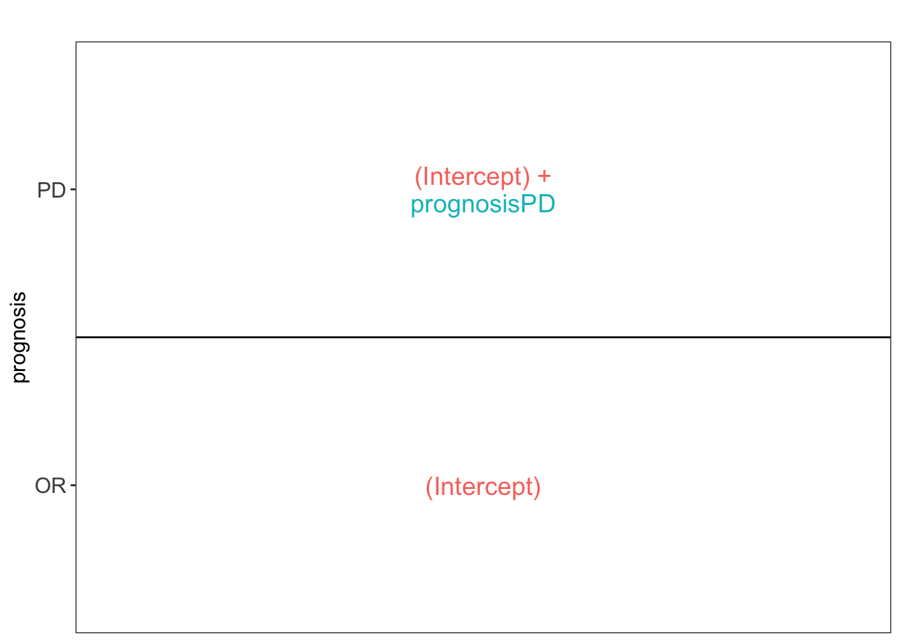
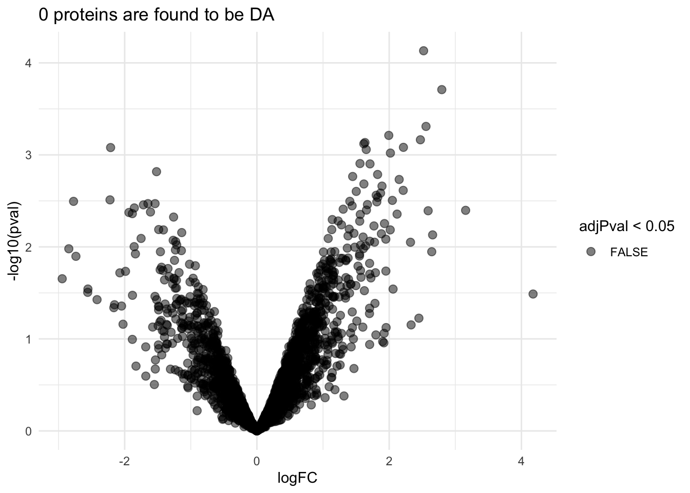
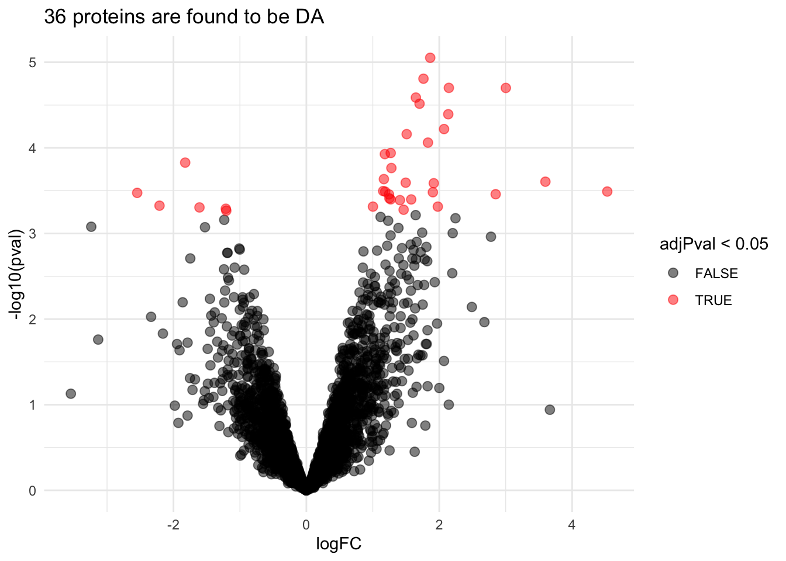
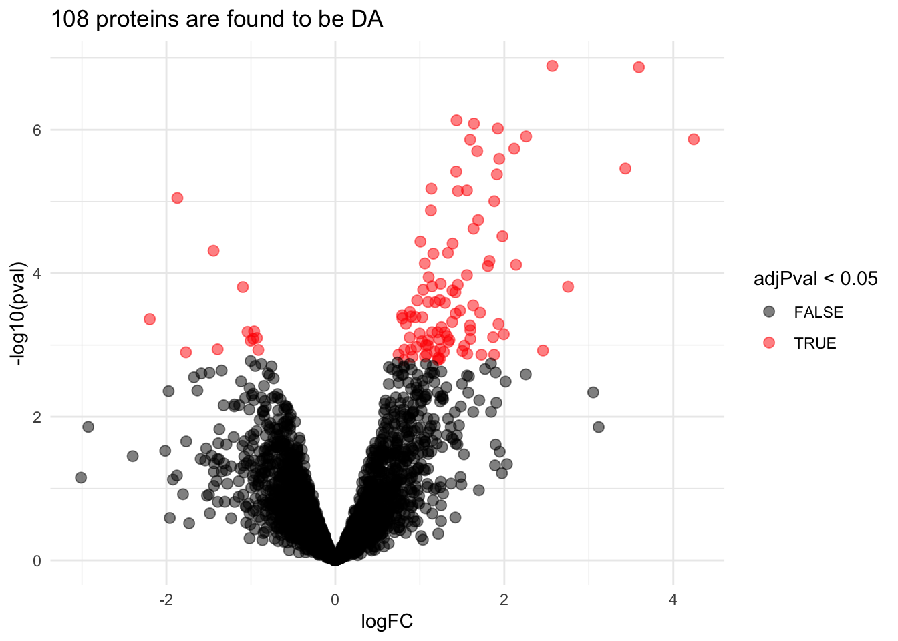
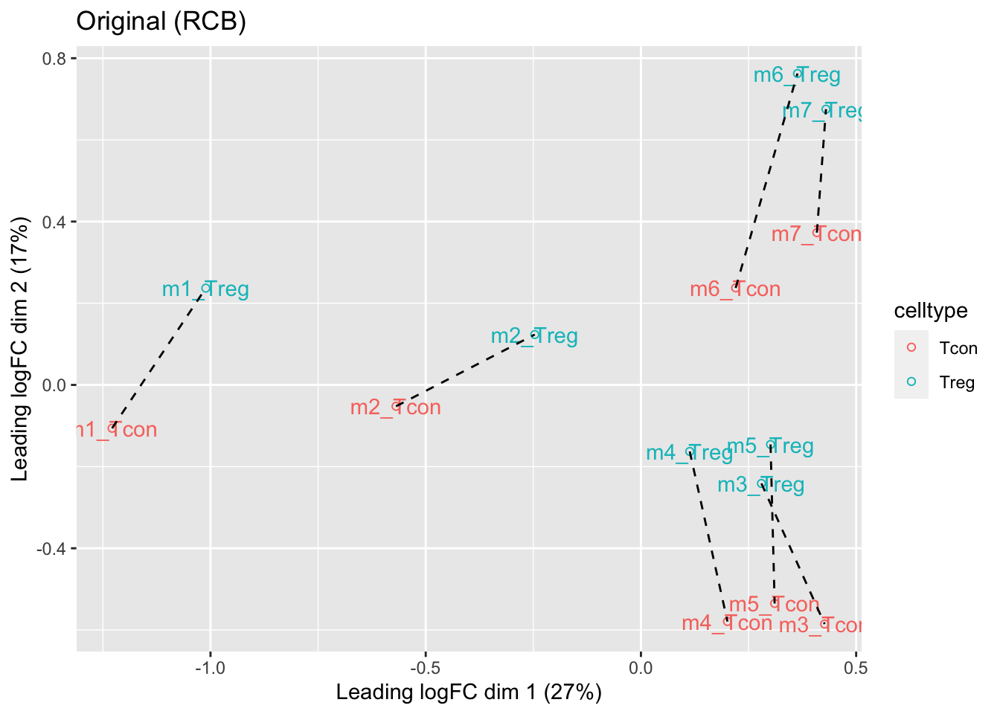
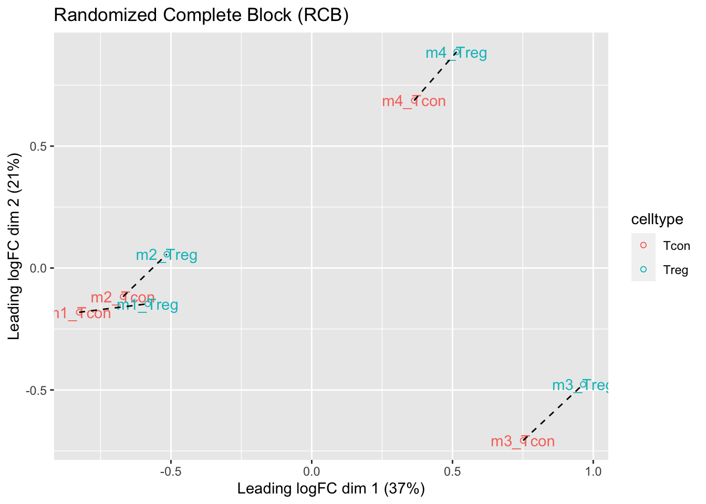
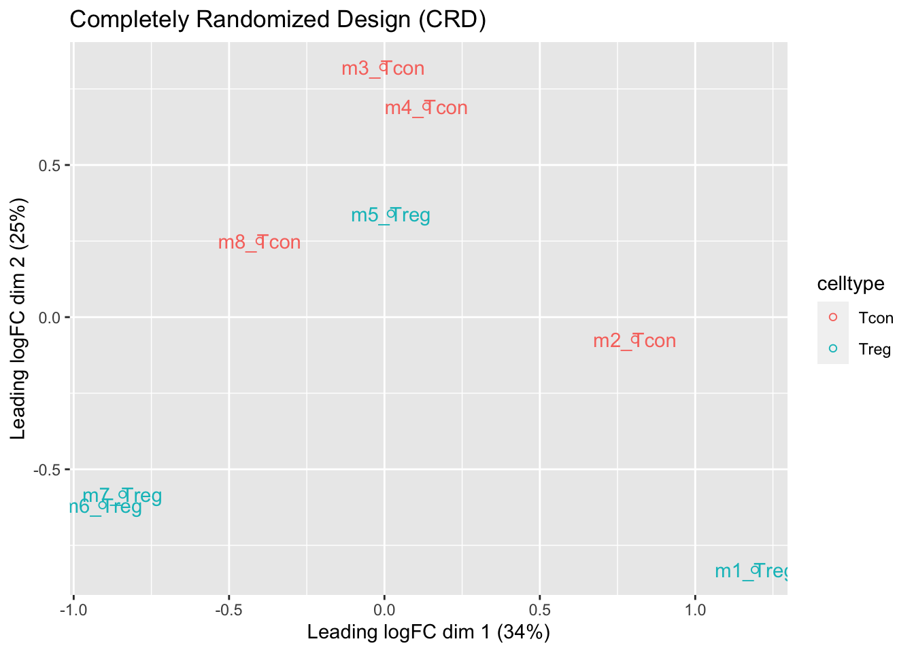
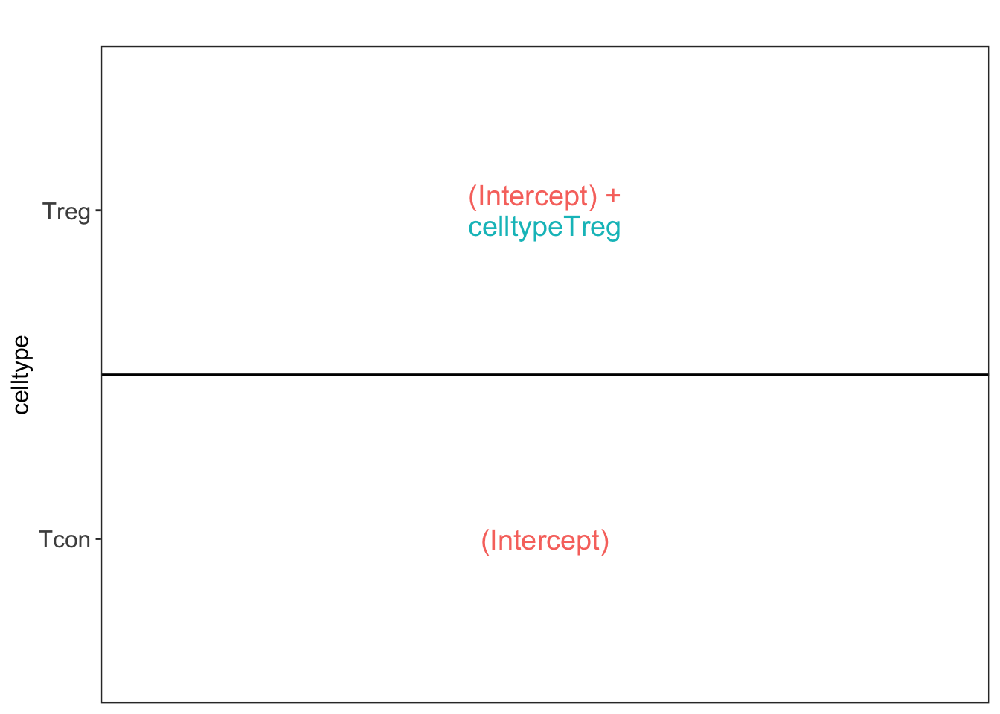

Experimental design concepts for label-free proteomics experiments
Lieven Clement
statOmics, Ghent University

This is part of the online course Experimental Design and Data-Analysis in Label-Free Quantitative LC/MS Proteomics - A Tutorial with msqrob2 (hupo21)
Click to see libraries that are loaded
1 Overview
- Sample size
- Randomized Complete Block Designs
2 Sample size
2.1 Statistical models
- Upon preprocessing and summarization we model the log2 transformed protein expression (\(y_{i}\)) values using a linear model
\[y_{i}= \beta_0 + \beta_1 x_{i,1} + \beta x_{i,2} + ... + \epsilon_i\]
with
- \(\beta_0\) the intercept
- \(\beta_j\) the slope for predictor \(x_{i,j}\)
- \(x_{i,j}\) a continuous predictor (such as age) or a dummy variable that can take values of 0 and 1 and that will used for factors (e.g treatment: cancer, normal).
Example:
- Estrogen Receptor Positive Breast cancer tissues from from patients treated with tamoxifen upon recurrence have been assessed in a proteomics study.
- Half of the patients had a good outcome (or) and the other half had a poor outcome (pd).
- The proteomes have been assessed using an LTQ-Orbitrap and the thermo output .RAW files were searched with MaxQuant (version 1.4.1.2) against the human proteome database (FASTA version 2012-09, human canonical proteome).
We model the data for a single protein using a model:
\[y_{i}= \beta_0 + \beta_{PD} x_{i,PD} + \epsilon_i\]
with \(x_{i,PD}=\begin{cases} 0& \text{good outcome}\\ 1& \text{poor outcome} \end{cases}\).
2.1.1 Read data
Click to see background and code
- We use a peptides.txt file from MS-data quantified with maxquant that contains MS1 intensities summarized at the peptide level.
peptidesFile <- "https://raw.githubusercontent.com/statOmics/pda21/data/quantification/cancer/peptides3vs3.txt"- Maxquant stores the intensity data for the different samples in columnns that start with Intensity. We can retreive the column names with the intensity data with the code below:
- Read the data and store it in QFeatures object
2.1.2 Design
Click to see background and code
## CharacterList of length 1
## [["peptideRaw"]] Intensity.OR.01 Intensity.OR.04 ... Intensity.PD.04- Note, that the sample names the outcome.
- We update the colData with information on the design
- We explore the colData
## DataFrame with 6 rows and 1 column
## prognosis
## <factor>
## Intensity.OR.01 OR
## Intensity.OR.04 OR
## Intensity.OR.07 OR
## Intensity.PD.02 PD
## Intensity.PD.03 PD
## Intensity.PD.04 PD2.1.3 Preprocessing
Click to see code for preprocessing
- Log-transform
- We calculate how many non zero intensities we have for each peptide and this can be useful for filtering.
- Peptides with zero intensities are missing peptides and should be represent with a
NAvalue rather than0.
- Logtransform data with base 2
- Filtering
Click to see code to filter the data
- Handling overlapping protein groups
In our approach a peptide can map to multiple proteins, as long as there is none of these proteins present in a smaller subgroup.
pe <- filterFeatures(pe, ~ Proteins %in% smallestUniqueGroups(rowData(pe[["peptideLog"]])$Proteins))- Remove reverse sequences (decoys) and contaminants
We now remove the contaminants, peptides that map to decoy sequences, and proteins which were only identified by peptides with modifications.
- Drop peptides that were only identified in one sample
We keep peptides that were observed at last twice.
## [1] 22413We keep 22413 peptides upon filtering.
- Normalization
- Summarization
2.2 Effect size?
## [[1]]
\[ \begin{array}{rclcl} E[Y|OR] &=& \beta_0\\ E[Y|PD] &=& \beta_0 + \beta_{PD}\\ \log_2 FC_{PD-OR} &=& \beta_0 + \beta_{PD} - \beta_0 &=&\beta_{PD} \end{array} \]
2.3 Statistical Inference
We want to find proteins that are differential abundant
\(\rightarrow\) use a statistical test
- \(H_0\): \(\log_2 FC_{PD-OR} = 0\) or \(\beta_{PD} = 0\)
- \(H_1\): \(\log_2 FC_{PD-OR} \neq 0\) or \(\beta_{PD} \neq 0\)
2.4 Experiment with 3 vs 3 comparison
Click to see code to inference
pe <- msqrob(object = pe, i = "protein", formula = ~prognosis)
L <- makeContrast("prognosisPD=0", parameterNames = c("prognosisPD"))
pe <- hypothesisTest(object = pe, i = "protein", contrast = L)volcano3x3 <- ggplot(rowData(pe[["protein"]])$prognosisPD %>% na.exclude,
aes(x = logFC, y = -log10(pval), color = adjPval < 0.05)) +
geom_point(cex = 2.5) +
scale_color_manual(values = alpha(c("black", "red"), 0.5)) +
theme_minimal() +
ggtitle(paste0(sum(rowData(pe[["protein"]])$prognosisPD$adjPval<0.05,na.rm=TRUE)," proteins are found to be DA"))
Upon correction for multiple testing with using the false discovery rate (FDR) method no proteins are found to be differentially expressed.
Note, that you can refresh the concept of multiple testing and FDR [here] (https://statomics.github.io/PDA21/pda_quantification_inference.html#14_Multiple_hypothesis_testing).
2.5 Experiment with a 6 vs 6 comparison
2.5.1 Read data
Click to see background and code
- We use a peptides.txt file from MS-data quantified with maxquant that contains MS1 intensities summarized at the peptide level.
peptidesFile <- "https://raw.githubusercontent.com/statOmics/pda21/data/quantification/cancer/peptides6vs6.txt"- Maxquant stores the intensity data for the different samples in columnns that start with Intensity. We can retreive the column names with the intensity data with the code below:
- Read the data and store it in QFeatures object
2.5.2 Design
Click to see background and code
## CharacterList of length 1
## [["peptideRaw"]] Intensity.OR.01 Intensity.OR.04 ... Intensity.PD.08- Note, that the sample names the outcome.
- We update the colData with information on the design
- We explore the colData
## DataFrame with 12 rows and 1 column
## prognosis
## <factor>
## Intensity.OR.01 OR
## Intensity.OR.04 OR
## Intensity.OR.07 OR
## Intensity.OR.09 OR
## Intensity.OR.10 OR
## ... ...
## Intensity.PD.03 PD
## Intensity.PD.04 PD
## Intensity.PD.06 PD
## Intensity.PD.07 PD
## Intensity.PD.08 PD2.5.3 Preprocessing
Click to see code for preprocessing
- Log-transform
- We calculate how many non zero intensities we have for each peptide and this can be useful for filtering.
- Peptides with zero intensities are missing peptides and should be represent with a
NAvalue rather than0.
- Logtransform data with base 2
- Filtering
Click to see code to filter the data
- Handling overlapping protein groups
In our approach a peptide can map to multiple proteins, as long as there is none of these proteins present in a smaller subgroup.
pe <- filterFeatures(pe, ~ Proteins %in% smallestUniqueGroups(rowData(pe[["peptideLog"]])$Proteins))- Remove reverse sequences (decoys) and contaminants
We now remove the contaminants, peptides that map to decoy sequences, and proteins which were only identified by peptides with modifications.
- Drop peptides that were only identified in one sample
We keep peptides that were observed at last twice.
## [1] 25452We keep 25452 peptides upon filtering.
- Normalization
- Summarization
2.5.4 Statistical Inference
Click to see code to inference
pe <- msqrob(object = pe, i = "protein", formula = ~prognosis)
L <- makeContrast("prognosisPD=0", parameterNames = c("prognosisPD"))
pe <- hypothesisTest(object = pe, i = "protein", contrast = L)volcano6x6 <- ggplot(rowData(pe[["protein"]])$prognosisPD %>% na.exclude,
aes(x = logFC, y = -log10(pval), color = adjPval < 0.05)) +
geom_point(cex = 2.5) +
scale_color_manual(values = alpha(c("black", "red"), 0.5)) +
theme_minimal() +
ggtitle(paste0(sum(rowData(pe[["protein"]])$prognosisPD$adjPval<0.05,na.rm=TRUE)," proteins are found to be DA"))
2.6 Experiment with a 9 vs 9 comparison
2.6.1 Read data
Click to see background and code
- We use a peptides.txt file from MS-data quantified with maxquant that contains MS1 intensities summarized at the peptide level.
peptidesFile <- "https://raw.githubusercontent.com/statOmics/pda21/data/quantification/cancer/peptides9vs9.txt"- Maxquant stores the intensity data for the different samples in columnns that start with Intensity. We can retreive the column names with the intensity data with the code below:
- Read the data and store it in QFeatures object
2.6.2 Design
Click to see background and code
## CharacterList of length 1
## [["peptideRaw"]] Intensity.OR.01 Intensity.OR.04 ... Intensity.PD.11- Note, that the sample names the outcome.
- We update the colData with information on the design
- We explore the colData
## DataFrame with 18 rows and 1 column
## prognosis
## <factor>
## Intensity.OR.01 OR
## Intensity.OR.04 OR
## Intensity.OR.07 OR
## Intensity.OR.09 OR
## Intensity.OR.10 OR
## ... ...
## Intensity.PD.07 PD
## Intensity.PD.08 PD
## Intensity.PD.09 PD
## Intensity.PD.10 PD
## Intensity.PD.11 PD2.6.3 Preprocessing
Click to see code for preprocessing
- Log-transform
- We calculate how many non zero intensities we have for each peptide and this can be useful for filtering.
- Peptides with zero intensities are missing peptides and should be represent with a
NAvalue rather than0.
- Logtransform data with base 2
- Filtering
Click to see code to filter the data
- Handling overlapping protein groups
In our approach a peptide can map to multiple proteins, as long as there is none of these proteins present in a smaller subgroup.
pe <- filterFeatures(pe, ~ Proteins %in% smallestUniqueGroups(rowData(pe[["peptideLog"]])$Proteins))- Remove reverse sequences (decoys) and contaminants
We now remove the contaminants, peptides that map to decoy sequences, and proteins which were only identified by peptides with modifications.
- Drop peptides that were only identified in one sample
We keep peptides that were observed at last twice.
## [1] 26696We keep 26696 peptides upon filtering.
- Normalization
- Summarization
2.6.4 Statistical Inference
Click to see code to inference
pe <- msqrob(object = pe, i = "protein", formula = ~prognosis)
L <- makeContrast("prognosisPD=0", parameterNames = c("prognosisPD"))
pe <- hypothesisTest(object = pe, i = "protein", contrast = L)volcano9x9 <- ggplot(rowData(pe[["protein"]])$prognosisPD %>% na.exclude,
aes(x = logFC, y = -log10(pval), color = adjPval < 0.05)) +
geom_point(cex = 2.5) +
scale_color_manual(values = alpha(c("black", "red"), 0.5)) +
theme_minimal() +
ggtitle(paste0(sum(rowData(pe[["protein"]])$prognosisPD$adjPval<0.05,na.rm=TRUE)," proteins are found to be DA"))
We have seen that the sample size is key to recover DA proteins
Indeed, if a protein is differentially expressed, the value of T-test depends on the effect size, the variability of the protein expression values and the sample size.
\[ T_g=\frac{\log_2 \text{FC}}{\text{se}_{\log_2 \text{FC}}} \]
\[ T_g=\frac{\widehat{\text{signal}}}{\widehat{\text{Noise}}} \]
For a two group comparison the standard error on the fold change equals
\[ \text{se}_{\log_2 \text{FC}}=\text{SD}\sqrt{\frac{1}{n_1}+\frac{1}{n_2}} \]
\(\rightarrow\) if number of bio-repeats increases we have a higher power!
3 Randomized complete block designs
\[\sigma^2= \sigma^2_{bio}+\sigma^2_\text{lab} +\sigma^2_\text{extraction} + \sigma^2_\text{run} + \ldots\]
- Biological: fluctuations in protein level between mice, fluctations in protein level between cells, …
- Technical: cage effect, lab effect, week effect, plasma extraction, MS-run, …
3.1 Nature methods: Points of significance - Blocking
3.2 Mouse example

Duguet et al. (2017) MCP 16(8):1416-1432. doi: 10.1074/mcp.m116.062745
- All treatments of interest are present within block!
- We can estimate the effect of the treatment within block!
To illustrate the power of blocking we have subsetted the data of Duguet et al. in a
completely randomized design with
- four mice for which we only have measurements on the ordinary T-cells
- four mice for which we only have measurements on the regulatory T-cells
randomized complete block design with four mice for which we both have
- measurements on ordinary T-cells as well as
- measurements on regulatory T-cells
3.2.1 Data
Click to see code
library(tidyverse)
library(limma)
library(QFeatures)
library(msqrob2)
library(plotly)
library(gridExtra)
peptidesFile <- "https://raw.githubusercontent.com/statOmics/PDA21/data/quantification/mouseTcell/peptidesRCB.txt"
peptidesFile2 <- "https://raw.githubusercontent.com/statOmics/PDA21/data/quantification/mouseTcell/peptidesCRD.txt"
peptidesFile3 <- "https://raw.githubusercontent.com/statOmics/PDA21/data/quantification/mouseTcell/peptides.txt"
ecols <- grep("Intensity\\.", names(read.delim(peptidesFile)))
pe <- readQFeatures(
table = peptidesFile,
fnames = 1,
ecol = ecols,
name = "peptideRaw", sep="\t")
ecols2 <- grep("Intensity\\.", names(read.delim(peptidesFile2)))
pe2 <- readQFeatures(
table = peptidesFile2,
fnames = 1,
ecol = ecols2,
name = "peptideRaw", sep="\t")
ecols3 <- grep("Intensity\\.", names(read.delim(peptidesFile3)))
pe3 <- readQFeatures(
table = peptidesFile3,
fnames = 1,
ecol = ecols3,
name = "peptideRaw", sep="\t")
### Design
colData(pe)$celltype <- substr(
colnames(pe[["peptideRaw"]]),
11,
14) %>%
unlist %>%
as.factor
colData(pe)$mouse <- pe[[1]] %>%
colnames %>%
strsplit(split="[.]") %>%
sapply(function(x) x[3]) %>%
as.factor
colData(pe2)$celltype <- substr(
colnames(pe2[["peptideRaw"]]),
11,
14) %>%
unlist %>%
as.factor
colData(pe2)$mouse <- pe2[[1]] %>%
colnames %>%
strsplit(split="[.]") %>%
sapply(function(x) x[3]) %>%
as.factor
colData(pe3)$celltype <- substr(
colnames(pe3[["peptideRaw"]]),
11,
14) %>%
unlist %>%
as.factor
colData(pe3)$mouse <- pe3[[1]] %>%
colnames %>%
strsplit(split="[.]") %>%
sapply(function(x) x[3]) %>%
as.factor3.2.2 Preprocessing
3.2.2.1 Log-transform
Click to see code to log-transfrom the data
- We calculate how many non zero intensities we have for each peptide and this can be useful for filtering.
rowData(pe[["peptideRaw"]])$nNonZero <- rowSums(assay(pe[["peptideRaw"]]) > 0)
rowData(pe2[["peptideRaw"]])$nNonZero <- rowSums(assay(pe2[["peptideRaw"]]) > 0)
rowData(pe3[["peptideRaw"]])$nNonZero <- rowSums(assay(pe3[["peptideRaw"]]) > 0)- Peptides with zero intensities are missing peptides and should be represent with a
NAvalue rather than0.
pe <- zeroIsNA(pe, "peptideRaw") # convert 0 to NA
pe2 <- zeroIsNA(pe2, "peptideRaw") # convert 0 to NA
pe3 <- zeroIsNA(pe3, "peptideRaw") # convert 0 to NA- Logtransform data with base 2
3.2.2.2 Filtering
Click to see details on filtering
- Handling overlapping protein groups
In our approach a peptide can map to multiple proteins, as long as there is none of these proteins present in a smaller subgroup.
pe <- filterFeatures(pe, ~ Proteins %in% smallestUniqueGroups(rowData(pe[["peptideLog"]])$Proteins))
pe2 <- filterFeatures(pe2, ~ Proteins %in% smallestUniqueGroups(rowData(pe2[["peptideLog"]])$Proteins))
pe3 <- filterFeatures(pe3, ~ Proteins %in% smallestUniqueGroups(rowData(pe3[["peptideLog"]])$Proteins))- Remove reverse sequences (decoys) and contaminants
We now remove the contaminants, peptides that map to decoy sequences, and proteins which were only identified by peptides with modifications.
pe <- filterFeatures(pe,~Reverse != "+")
pe <- filterFeatures(pe,~ Potential.contaminant != "+")
pe2 <- filterFeatures(pe2,~Reverse != "+")
pe2 <- filterFeatures(pe2,~ Potential.contaminant != "+")
pe3 <- filterFeatures(pe3,~Reverse != "+")
pe3 <- filterFeatures(pe3,~ Potential.contaminant != "+")- Drop peptides that were only identified in one sample
We keep peptides that were observed at last twice.
## [1] 44449## [1] 43401## [1] 474313.2.2.3 Normalization
Click to see code to normalize the data
3.2.2.4 Summarization
Click to see code to summarize the data
## Your quantitative and row data contain missing values. Please read the
## relevant section(s) in the aggregateFeatures manual page regarding the
## effects of missing values on data aggregation.## Your quantitative and row data contain missing values. Please read the
## relevant section(s) in the aggregateFeatures manual page regarding the
## effects of missing values on data aggregation.## Your quantitative and row data contain missing values. Please read the
## relevant section(s) in the aggregateFeatures manual page regarding the
## effects of missing values on data aggregation.3.2.3 Data Exploration: what is impact of blocking?
Click to see code
levels(colData(pe3)$mouse) <- paste0("m",1:7)
mdsObj3 <- plotMDS(assay(pe3[["protein"]]), plot = FALSE)
mdsOrig <- colData(pe3) %>%
as.data.frame %>%
mutate(mds1 = mdsObj3$x,
mds2 = mdsObj3$y,
lab = paste(mouse,celltype,sep="_")) %>%
ggplot(aes(x = mds1, y = mds2, label = lab, color = celltype, group = mouse)) +
geom_text(show.legend = FALSE) +
geom_point(shape = 21) +
geom_line(color = "black", linetype = "dashed") +
xlab(
paste0(
mdsObj3$axislabel,
" ",
1,
" (",
paste0(
round(mdsObj3$var.explained[1] *100,0),
"%"
),
")"
)
) +
ylab(
paste0(
mdsObj3$axislabel,
" ",
2,
" (",
paste0(
round(mdsObj3$var.explained[2] *100,0),
"%"
),
")"
)
) +
ggtitle("Original (RCB)")
levels(colData(pe)$mouse) <- paste0("m",1:4)
mdsObj <- plotMDS(assay(pe[["protein"]]), plot = FALSE)
mdsRCB <- colData(pe) %>%
as.data.frame %>%
mutate(mds1 = mdsObj$x,
mds2 = mdsObj$y,
lab = paste(mouse,celltype,sep="_")) %>%
ggplot(aes(x = mds1, y = mds2, label = lab, color = celltype, group = mouse)) +
geom_text(show.legend = FALSE) +
geom_point(shape = 21) +
geom_line(color = "black", linetype = "dashed") +
xlab(
paste0(
mdsObj$axislabel,
" ",
1,
" (",
paste0(
round(mdsObj$var.explained[1] *100,0),
"%"
),
")"
)
) +
ylab(
paste0(
mdsObj$axislabel,
" ",
2,
" (",
paste0(
round(mdsObj$var.explained[2] *100,0),
"%"
),
")"
)
) +
ggtitle("Randomized Complete Block (RCB)")
levels(colData(pe2)$mouse) <- paste0("m",1:8)
mdsObj2 <- plotMDS(assay(pe2[["protein"]]), plot = FALSE)
mdsCRD <- colData(pe2) %>%
as.data.frame %>%
mutate(mds1 = mdsObj2$x,
mds2 = mdsObj2$y,
lab = paste(mouse,celltype,sep="_")) %>%
ggplot(aes(x = mds1, y = mds2, label = lab, color = celltype, group = mouse)) +
geom_text(show.legend = FALSE) +
geom_point(shape = 21) +
xlab(
paste0(
mdsObj$axislabel,
" ",
1,
" (",
paste0(
round(mdsObj2$var.explained[1] *100,0),
"%"
),
")"
)
) +
ylab(
paste0(
mdsObj$axislabel,
" ",
2,
" (",
paste0(
round(mdsObj2$var.explained[2] *100,0),
"%"
),
")"
)
) +
ggtitle("Completely Randomized Design (CRD)")


We observe that the leading fold change is according to mouse
In the second dimension we see a separation according to cell-type
With the Randomized Complete Block design (RCB) we can remove the mouse effect from the analysis!
We can isolate the between block variability from the analysis using linear model: \[ y \sim \text{celltype} + \text{mouse} \]
Possible in msqrob2 and MSstats but not possible with Perseus!
3.3 Modeling and inference
3.3.2 RCB wrong analysis
3.3.4 Estimation, effect size and inference
Effect size in RCB
## [[1]]
Effect size in CRD
## [[1]]
L <- makeContrast("celltypeTreg = 0", parameterNames = c("celltypeTreg"))
pe <- hypothesisTest(object = pe, i = "protein", contrast = L)
pe <- hypothesisTest(object = pe, i = "protein", contrast = L, modelColumn = "wrongModel", resultsColumnNamePrefix="wrong")
pe2 <- hypothesisTest(object = pe2, i = "protein", contrast = L)3.3.5 Comparison of results
Click to see code
volcanoRCB <- ggplot(
rowData(pe[["protein"]])$celltypeTreg,
aes(x = logFC, y = -log10(pval), color = adjPval < 0.05)
) +
geom_point(cex = 2.5) +
scale_color_manual(values = alpha(c("black", "red"), 0.5)) +
theme_minimal() +
ggtitle(paste0("RCB: \n",
sum(rowData(pe[["protein"]])$celltypeTreg$adjPval<0.05,na.rm=TRUE),
" significant"))
volcanoRCBwrong <- ggplot(
rowData(pe[["protein"]])$wrongcelltypeTreg,
aes(x = logFC, y = -log10(pval), color = adjPval < 0.05)
) +
geom_point(cex = 2.5) +
scale_color_manual(values = alpha(c("black", "red"), 0.5)) +
theme_minimal() +
ggtitle(paste0("RCB wrong: \n",
sum(rowData(pe[["protein"]])$wrongcelltypeTreg$adjPval<0.05,na.rm=TRUE),
" significant"))
volcanoCRD <- ggplot(
rowData(pe2[["protein"]])$celltypeTreg,
aes(x = logFC, y = -log10(pval), color = adjPval < 0.05)
) +
geom_point(cex = 2.5) +
scale_color_manual(values = alpha(c("black", "red"), 0.5)) +
theme_minimal() +
ggtitle(paste0("CRD: \n",
sum(rowData(pe2[["protein"]])$celltypeTreg$adjPval<0.05,na.rm=TRUE),
" significant"))## Warning: Removed 777 rows containing missing values (geom_point).## Warning: Removed 382 rows containing missing values (geom_point).## Warning: Removed 262 rows containing missing values (geom_point).
3.3.6 Comparison of standard deviation
Click to see code
accessions <- rownames(pe[["protein"]])[rownames(pe[["protein"]])%in%rownames(pe2[["protein"]])]
dat <- data.frame(
sigmaRBC = sapply(rowData(pe[["protein"]])$msqrobModels[accessions], getSigmaPosterior),
sigmaRBCwrong = sapply(rowData(pe[["protein"]])$wrongModel[accessions], getSigmaPosterior),
sigmaCRD <- sapply(rowData(pe2[["protein"]])$msqrobModels[accessions], getSigmaPosterior)
)
plotRBCvsWrong <- ggplot(data = dat, aes(sigmaRBC, sigmaRBCwrong)) +
geom_point(alpha = 0.1, shape = 20) +
scale_x_log10() +
scale_y_log10() +
geom_abline(intercept=0,slope=1)
plotCRDvsWrong <- ggplot(data = dat, aes(sigmaCRD, sigmaRBCwrong)) +
geom_point(alpha = 0.1, shape = 20) +
scale_x_log10() +
scale_y_log10() +
geom_abline(intercept=0,slope=1)
plotRBCvsCRD <- ggplot(data = dat, aes(sigmaRBC, sigmaCRD)) +
geom_point(alpha = 0.1, shape = 20) +
scale_x_log10() +
scale_y_log10() +
geom_abline(intercept=0,slope=1)## Warning: Removed 730 rows containing missing values (geom_point).## Warning: Removed 397 rows containing missing values (geom_point).## Warning: Removed 743 rows containing missing values (geom_point).
We clearly observe that the standard deviation of the protein expression in the RCB is smaller for the majority of the proteins than that obtained with the CRD
The standard deviation of the protein expression RCB where we perform a wrong analysis without considering the blocking factor according to mouse is much larger for the marjority of the proteins than that obtained with the correct analysis.
Indeed, when we ignore the blocking factor in the RCB design we do not remove the variability according to mouse from the analysis and the mouse effect is absorbed in the error term. The standard deviation than becomes very comparable to that observed in the completely randomised design where we could not remove the mouse effect from the analysis.
Why are some of the standard deviations for the RCB with the correct analysis larger than than of the RCB with the incorrect analysis that ignored the mouse blocking factor?
Can you think of a reason why it would not be useful to block on a particular factor?